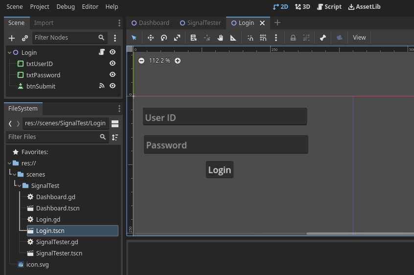
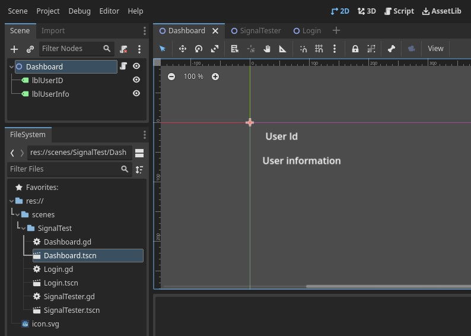

Signals are a delegation mechanism built into Godot that allows one game object to react to a change in another without them referencing one another. Using signals limits coupling and keeps your code flexible.
For example, you might have a life bar on the screen that represents the player’s health. When the player takes damage or uses a healing potion, you want the bar to reflect the change. To do so, in Godot, you would use signals.
Using Signals
In this example, we will see how we can pass data around the sibling scenes through common parent.
We will create 3 scenes. (SignalTester, Login and Dashboard)
SignalTester
It is the main container scene. It loads the instances of Login and Dashboard Scenes. It receives the data from login instance signal and passes it to dashboard instance.
SignalTester.gd
extends Node2D
const LoginScreen = preload("res://scenes/SignalTest/Login.tscn")
const DashboardScreen = preload("res://scenes/SignalTest/Dashboard.tscn")
var dashboard
func _ready():
print("Signal Tester Ready !")
LoginTest()
## Test application for using Signals
func LoginTest():
var login = LoginScreen.instantiate()
add_child(login)
dashboard = DashboardScreen.instantiate()
dashboard.position = Vector2(50,200)
add_child(dashboard)
# Way 1 : Directly connect to signal object
login.login_request.connect(login_request_handler_1)
# Way 2 : Using the name of the signal
login.connect("login_request",login_request_handler_2)
# Way 3 : Using lambda
login.login_request.connect(func(d):print("Using lambda "+d.userId))
func login_request_handler_1(f: Dictionary):
print("login_request_handler_1")
f.info = "This is information sent from main scene"
dashboard.updateDashboard(f)
func login_request_handler_2(g:Dictionary):
print("login_request_handler_2")
print(g)Login
It consists of 2 TextEdit fields for inputting userId and password. It has 1 Button which will emit the signal with the userId and password
dictionary.

Login.gd
extends Node2D
signal login_request(userInfo:Dictionary)
func _on_btn_submit_pressed():
var userName = $txtUserID.text
var password = $txtPassword.text
var user : Dictionary = {"userId":userName, "password":password}
login_request.emit(user)
Dashboard
It constists of 2 Labels to show User Id and User information. It has method to update the lable text which will be called from SignalTester.gd 
Dashboard.gd
extends Node2D
func updateDashboard(userInfo:Dictionary):
$lblUserID.text = userInfo.userId
$lblUserInfo.text = userInfo.info